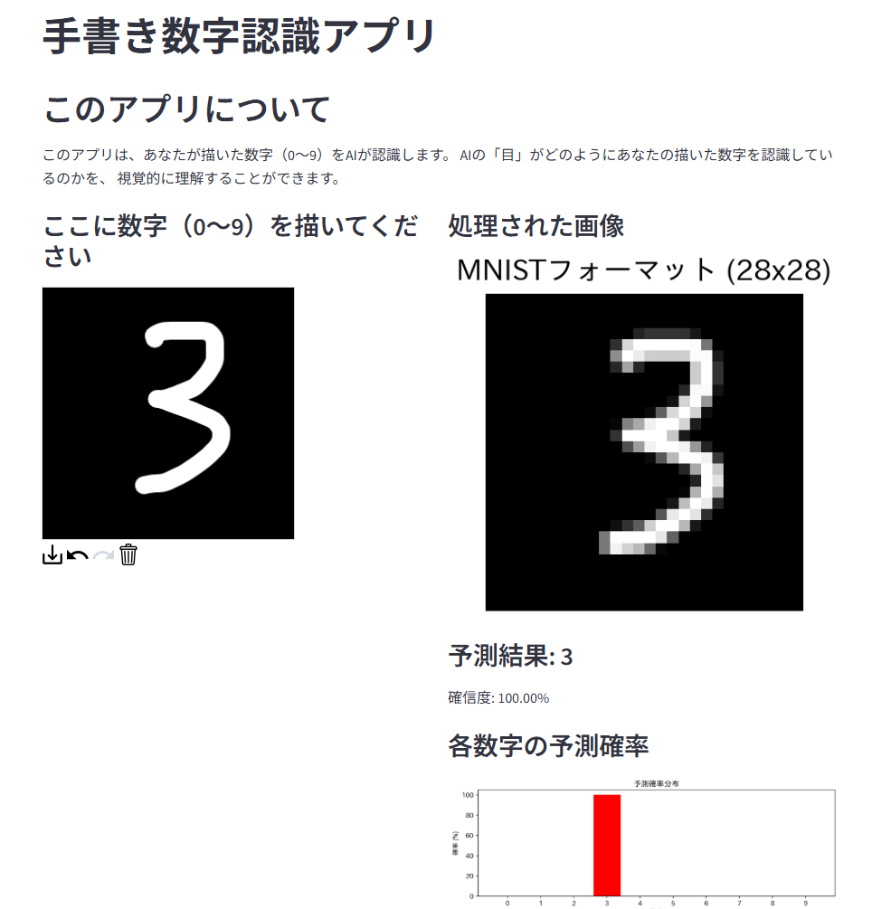

🔢 手書き数字認識とCNN可視化アプリ 🔢
LLMアプリ100日チャレンジ - Day 19

- ✏️ 直感的なキャンバスで数字を自由に描画
- 🧠 畳み込みニューラルネットワーク（CNN）による高精度認識
- 👁️ AIの「目」を可視化する特徴マップ表示機能
- 📊 各数字の予測確率をリアルタイムでグラフ表示
- 🎓 初心者にもわかりやすいCNN解説付き
アプリを開く
TensorFlow/Kerasで訓練された精度98%以上のCNNモデルを使用。
AIがどのように画像を「見て」判断しているかを、特徴マップを通じて直感的に理解できます。
← LLMアプリ100日チャレンジに戻る